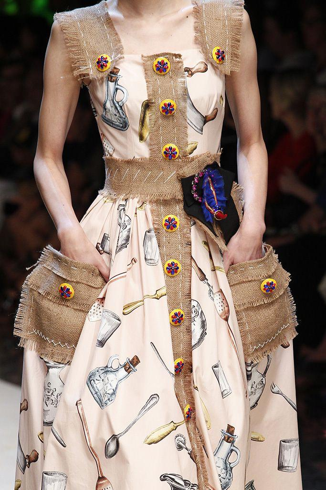

¿Por Qué Apostar por la Ropa de Segunda Mano?
Durante mucho tiempo, la ropa de segunda mano fue estigmatizada como algo de "poco valor". Sin embargo, hoy representa una de las formas más efectivas de reducir el impacto ambiental de la industria textil. Comprar usado es una declaración de estilo, conciencia y rebeldía frente al consumo acelerado.
Cada prenda reutilizada evita que más residuos terminen en rellenos sanitarios y prolonga el ciclo de vida de la ropa. Además, permite encontrar piezas únicas, fuera de lo común, que cuentan historias propias. Es moda con carácter, y eso no lo ofrecen las grandes cadenas de ropa rápida.
En Bogotá hay lugares increíbles para sumarse a esta tendencia: RetroRock para los amantes del rock y lo alternativo, Ropajes con prendas seleccionadas de segunda y Garage Sale Bogotá, un mercado itinerante donde los tesoros aparecen sin avisar. Apostar por lo usado es darle estilo al reciclaje.